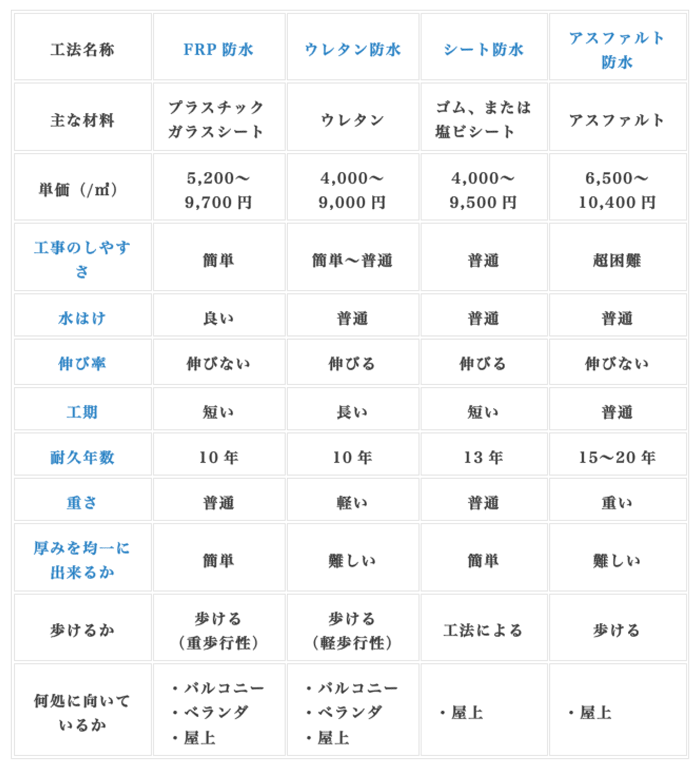

外壁防水塗装の施工法
屋上・ベランダ防水工事の工法
防水工事には様々な種類があり、それぞれにメリットデメリットが存在します。
工法により劣化具合、劣化までの時間や、劣化してしまったときの工事の手間、費用などが違ってきます。
予算に合わせた工法を選択しましょう。
主な防水工事の比較

工事のしやすさ
防水工事を行う上で、その防水工事が難しいか簡単かを表しています。
水はけ
雨水は様々な成分を含んでおり、酸性などの性質を持っていることもあります。雨水がそこにたまっているだけで防水構造を少しずつ劣化させていていきます。つまり雨水をそこにとどまらせない性質「水はけ」も重要になってきます。そこで、水が流れるようにきちんと勾配をつける必要があります。また、排水溝も適切に配置しておくことが重要になってきます。
伸び率
伸び率が大きいほど亀裂が入りにくいです。下地にシートの伸び率を超える以上の亀裂が入るとシートが切れてしまいます。
工期
雨が降ると工事が中断されるので工期は短い方がよいです。特に2液型の場合、攪拌してからすぐに塗らないといけないという制約があります。複数層を塗る場合は乾きが悪いと作業が中断し効率が悪いです。
耐久年数
それぞれの耐用年数は目安として受け止めてください。気候やその他の要因によって耐用年数は変動します。
１. FRP防水工法
一番費用対効果が高く、工期も短い為おすすめの工事と言えます。
専用の樹脂塗料（防水用ポリエステル）で塗装を行いながら、繊維強化プラスチックのシートも重ねて塗り込み、防水層の強化を行います。
シートは薄く繊維質なので重ねて使用します。バルコニー全体に防水層を形成できます。
FRP防水工法が使われている場所としては、屋上駐車場、工場の床、一般的な屋上、ベランダ、バルコニー、プールなど
水が当たる可能性のあるあらゆる場所に使用されています。
1-1 FRP防水工法の特徴
・人間が歩くのはもちろんのこと、車が乗り入れられるぐらいの強度を重歩行が可能です。
・ガラス繊維シートは自由に屈曲できるのでどのようなところでも施工できます
・工事が簡単で工期が短い
・FRP防水工事の工程
ゴミ取り、ケレン作業などの下地処理
↓
プライマー（塗料をつきやすくする塗料）を塗布
↓
専用下塗り塗料を塗布
↓
防水用樹脂塗料を塗布し、ガラスマットを敷き詰め、さらに塗料をもう一度塗る（一層目）
↓
乾燥
↓
もう一度、防水用樹脂塗料を塗布し、
ガラスマットを敷き詰め、さらに塗料をもう一度塗る（二層目）
↓
中塗り塗料を上から塗装（着色もここで行う）
↓
ガラスマットは様々な部分でケバケバが出てしまうので、
サンドペーパーやディスクサンダーなどのやすり機械で平滑処理を行う
↓
トップコートを塗る
1-2 トップコートは5年に一回塗りかえる
FRP防水は紫外線に弱いです。FRP防水工事は仕上げにトップコートという
塗料を上からかぶせるように塗っていきます。
この塗料が紫外線からFRP防水層を守っています。
この層を出来れば5年に一度塗りかえておけば、防水層を長い間維持することが可能です。
1-3下地の水分量、硬化剤の量、塗料のタイプに気をつける
特にFRP防水工事では、下地の水分量が非常に大切です。
乾いてからは水に強いのですが、乾くまでは非常に水にデリケートなのです。
下地が濡れていると、うまく塗装が密着せずに後ではがれたり、膨れたりすることがあります。
FRP防水工事の専用塗料は2液型で、主材に硬化剤を混ぜて固めるタイプの塗料です。
このときの硬化剤の量が気温によって異なるため、気をつける必要があります。
２. ウレタン防水工法
施工が比較的簡単で、やりやすい工法です。
2-1 通気緩衝工法（脱気工法）
通気緩衝工法は、下地の上に通気シートを敷き詰めて、その上からウレタン塗料を塗るという工法です。
通気緩衝シートが下地のコンクリート部を緩衝しながら支えるため、クラックがおきにくい構造です。
湿気等がシートの下にたまらないようにするため、脱気筒というステンレス製の筒が
何カ所かに取り付けられるのが特徴です。
施工の流れ
ゴミ取り、ケレン作業、目地のシーリング充填などの下地処理
↓
プライマー（塗料をつきやすくする塗料）を塗布
↓
通気緩衝シートを敷き詰めるようにしてはる（裏がシール状になっているか、ボンドで貼り付ける）
↓
シートが重なっている部分から水が漏れないようにテープで処理する
↓
脱気筒を設置する
↓
立ち上がり部（垂直の部分）にウレタン塗料防水剤を塗布し、
ガラスクロスを貼り付け、さらに同じ塗料を上から塗布する
↓
平場にウレタン塗料を流し込みコテで広げる
↓
乾燥後、もう一度ウレタン塗料を流し込んでコテで均一に広げる
↓
トップコートを塗って完成
2.2 密着工法
密着工法は下地の上に直接、防水層であるウレタン防水塗料を塗っていく工法です。下地と防水層が密着していることから密着工法といいます。下塗りと上塗りをウレタン防水剤で塗り、その上からトップコートを塗ります。下塗りをさらに二回にわけで補強布を入れ込む事で防水層の強度を上げる工法もあります。
施工の流れ
ゴミ取り、ケレン作業、目地のシーリング充填などの下地処理
↓
プライマー（塗料をつきやすくする塗料）を塗布
↓
ウレタン防水剤をコテ、ヘラでまんべんなく塗布し、
補強布をしいて再度ウレタン防水剤をまんべんなく塗布する（下塗り）
↓
乾いたらもう一度ウレタン防水剤を塗布する（上塗り）
↓
トップコートを塗布して完成
ウレタン防水工法の特徴
ウレタン防水工法のメリットは以下の通りです。
•工期が短く、コストがかからない
•いろいろな下地に対応出来る
•簡単にできる工法
•廃材が出ない
ウレタン防水工法の注意点
主材と硬化剤を混ぜ合わせてから使う事が出来る時間（可使時間）が短いので、
必要な分だけそのたびに作る必要があります。
トップコートは必ず塗る
ウレタン塗料は防水には効果を発揮してくれるものの、非常に紫外線に弱いので、
ウレタン塗料だけ塗ってもすぐに劣化してしまいます。
必ずウレタン塗料の防水層の上から、紫外線に強いトップコートを塗るようにしてください。
下地処理をしっかりと行う
クラックはUカット工法（ひび割れをU字に削り取って補修する工法）とコーキングで補修、
フクレは皮スキ（金属製のヘラ）で削り取り、目地にもコーキングを充填します。
あまりに下地が悪い場合は、きちんと処理した後にモルタルなどで塗りつぶす左官処理を施す場合もあります。
３. シート防水工法
シート防水にもいくつかの工法があります。
3-1 塩化ビニール樹脂シート（接着工法）
塩化ビニール樹脂シートを下地に直接貼り付ける工法です。
塩化ビニール樹脂の上に塗料は塗りません。防水層はむき出しの状態になります。
下地処理
↓
接着剤塗布
↓
塩化ビニールシート敷設
↓
ローラーで転圧（まんべんなく上からローラーで押さえつける）
↓
接合部を熱や薬剤などで溶かして圧着し、シーリング材で埋めて完成
3-2 塩化ビニール樹脂シート（機械的固定工法）
塩化ビニールを機械的に鋼板器具やビスなどで固定していく工法です。
接着工法とは違い、ある程度の下地に対応出来るので、既存の防水層を撤去せずに行う事が出来ます。
その反面、人が歩くのに向いていません（非歩行性）。
下地処理
↓
絶縁用シートを器具で固定する
↓
塩化ビニール樹脂シートを敷設
↓
絶縁用シート同様、器具で塩化ビニール樹脂シートを固定
（誘導加熱装置（ディスクヒーター）というものを使います）
↓
接合部や端を溶着
↓
溶着後シーリング材で隙間を埋めて完成
3-3 合成ゴム系シート防水工法
下地処理
↓
プライマーを塗布
↓
ゴムシートの裏面と下地に接着剤を塗布
（機械的固定工法の場合は鋼板盤とビスで固定）
↓
ローラーなどを使ってしっかりと転圧する
↓
接合部はシーリング材などを使用して水が入り込まないようにする
↓
仕上げ用の塗料を塗布して完成
4. アスファルト防水工法
4-1 熱工法
溶接釜を設置し、そこで熔解した液体状態の熱いアスファルトを使って
ルーフィングと呼ばれる防水シートを貼り付けていく工法です。
その後、溶かしたアスファルトを全面に塗っていきます。
4-2 冷工法
片面が粘着加工してある改質アスファルトシートを下地に貼り付け、
上にも同様にアスファルトシートを貼っていく工法です。
4-3 冷熱工法
熱工法と冷工法を組み合わせた工法です。粘着性があるアスファルトシートを貼り付けて、
その上から、熱で熔解したアスファルトを使ってシートを貼り付けていきます。
4-4 トーチ工法
バーナーでアスファルトシートをあぶりながら密着させていく工法です。
アスファルトは熱で溶かすことが出来るので、バーナーで焼きながら下地に密着させます。
溶かして密着させるのでシートとシートの間や接合部などもしっかりと密着します。


リーフォーム事例
リメイク合同会社
-----------------------
TEL : 029-274-0220
FAX : 029-274-0220
ひたちなか市中根2283-3
-----------------------
TEL : 029-274-0220
FAX : 029-274-0220
ひたちなか市中根2283-3